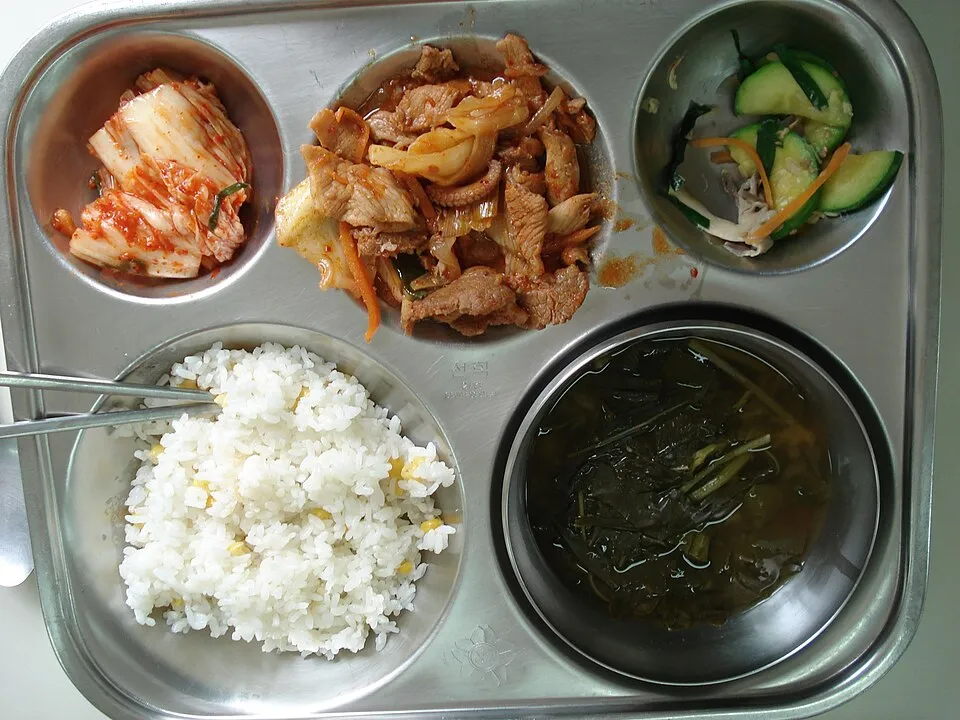

Català · 3 sessions
El menjador ideal
Repte: escriure una carta a la direcció que proposi un canvi al menjador i el defensi amb arguments, no amb opinions soltes.
Un mateix tema, el menjador de l'escola, a dues matèries la mateixa setmana. A Català, l'alumnat escriu una carta argumentada a la direcció per millorar-lo. A Anglès, planifica el menú de la setmana i el justifica. Cada matèria té presentació per a la pantalla i fitxa A4 en quatre versions. L'alumnat d'acollida treballa les mateixes paraules i fotos que la resta del grup, i també vota.
L'alumnat veu només dues coses: la presentació a la pantalla tàctil i la fitxa que té damunt la taula. Aquesta pàgina és per a vosaltres.
Català · 3 sessions
Repte: escriure una carta a la direcció que proposi un canvi al menjador i el defensi amb arguments, no amb opinions soltes.

Anglès · 2 sessions
Repte: planificar el menú escolar d'una setmana i explicar per què, amb a / an / some i I'd like… because…. El nivell A escriu, a més, un correu a la cuinera.
Les dues matèries comparteixen fotos, pictogrames i vocabulari. Català va al davant: quan arriba l'anglès, el grup ja ha parlat del menjador.
| Quan | Matèria | Què es fa | Fitxa |
|---|---|---|---|
| Dilluns 11:00 | Català | Safates del món a la pantalla: què hi veiem i què en pensem. Paraules del menjador. Fet o opinió? | pàg. 1 |
| Dilluns 12:00 | Anglès | Food words amb àudio, a / an / some al contenidor tàctil, i un listening: Amira demana el dinar a la cuina. | page 1 |
| Dimecres 12:00 | Català | L'hamburguesa argumentativa i els connectors. Cada grup tria què canviaria primer. | pàg. 2 |
| Dijous 11:00 | Anglès | El menú de la setmana i les raons, amb I'd like… because…. Per acabar, es diu en veu alta. | page 2 (A: 2–3) |
| Divendres 9:30 | Català | Escriure la carta a la direcció, revisar-la amb la llista de control i llegir-ne alguna en veu alta. | pàg. 3 (A: 3–4) |
Totes les versions tenen el mateix tema, les mateixes fotos i el mateix producte final. El que canvia és quanta ajuda escrita hi ha. La versió A no és més llarga que la B: l'exigència és a la pregunta, i els criteris són escrits a la fitxa.
Els alumnes nouvinguts encara no saben català, però fan el mateix tema, al mateix moment i sobre les mateixes fotos que la resta. No fan una fitxa paral·lela.
Els pictogrames i les fotos de la presentació són els de la seva fitxa. Quan el grup parla de la safata del Japó, ells la tenen al davant.
A la presentació, cada paraula es pot escoltar, i es pot llegir en àrab, romanès, urdú, xinès o castellà. Al diccionari de la fitxa hi ha una columna per a la llengua de cada alumne.
A Català, el grup vota què canviaria primer i l'alumne d'acollida vota amb els mateixos pictogrames. La seva frase «Jo proposo… perquè…» entra a la carta de la classe.
A Anglès tothom parteix de zero amb les paraules noves. La fitxa d'acollida hi afegeix la columna en català, i així les dues llengües s'aprenen alhora.
Text literal del Decret 175/2022, annex 3. Competències específiques i criteris de 3r i 4t d'ESO. Obre el document oficial
Produir textos escrits i multimodals amb adequació, coherència, cohesió, aplicant estratègies elementals de planificació, redacció, revisió, correcció i edició, amb regulació dels iguals i autoregulació progressivament autònoma, i atenent les convencions pròpies del gènere discursiu triat, per construir coneixement i donar resposta de manera informada, eficaç i creativa a demandes comunicatives concretes.
Produir textos orals i multimodals amb coherència, claredat i registre adequats, atenent les convencions pròpies dels diferents gèneres discursius i participar en interaccions orals variades, amb autonomia, per expressar idees, sentiments i conceptes, construir coneixement i establir vincles personals.
Descriure i valorar la diversitat lingüística i cultural a partir del reconeixement de les llengües de l'alumnat i la realitat plurilingüe i pluricultural, per afavorir la transferència lingüística, identificar i rebutjar estereotips i prejudicis lingüístics, i valorar aquesta diversitat com a font de riquesa cultural.
Comprendre i interpretar textos orals i multimodals, en la llengua estàndard, recollint el sentit general i la informació més rellevant, la seva forma i el seu contingut, per construir coneixement, formar-se opinió i eixamplar les possibilitats de gaudi i lleure.
Produir textos escrits i multimodals amb adequació, coherència i cohesió, aplicant estratègies elementals de planificació, redacció, revisió, correcció i edició, amb regulació dels iguals i autoregulació progressivament autònoma, i atenent les convencions pròpies del gènere discursiu triat, per construir coneixement i donar resposta de manera informada, eficaç i creativa a demandes comunicatives concretes.
Produir textos orals i multimodals amb coherència, claredat i registre adequats, atenent les convencions pròpies dels diferents gèneres discursius, i participar en interaccions orals variades, amb autonomia, per expressar idees, sentiments i conceptes, construir coneixement i establir vincles personals.
Descriure i valorar la diversitat lingüística i cultural a partir del reconeixement de les llengües de l'alumnat i la realitat plurilingüe, pluricultural i intercultural, per afavorir la transferència lingüística, identificar i rebutjar estereotips i prejudicis lingüístics i valorar aquesta diversitat com a font de riquesa cultural.
A l'esquerra, el que li podeu demanar; també funciona amb una nota de veu. A la dreta, el que us torna.
Tinc dos alumnes nous que parlen tigrinya.Claude tornaEl diccionari de la fitxa d'acollida amb la columna en tigrinya, i l'àudio de la presentació en aquesta llengua si hi ha veu disponible.
La B se'm queda curta per a 3r C.Claude tornaUna B+ amb un contraargument guiat a la pàgina 2. No allarga la fitxa: substitueix un exercici.
T'envio fotos de 25 cartes.Claude tornaUna graella amb els criteris de dalt: què ha assolit cada carta i un comentari curt per a cada alumne. La nota la poseu vosaltres.
Fes la carta definitiva de la classe.Claude tornaUna carta única amb les propostes més votades, incloses les de l'alumnat d'acollida, a punt per portar a direcció.
Pictogrames: Sergio Palao, ARASAAC (Govern d'Aragó), CC BY-NC-SA. Fotos de Wikimedia Commons: